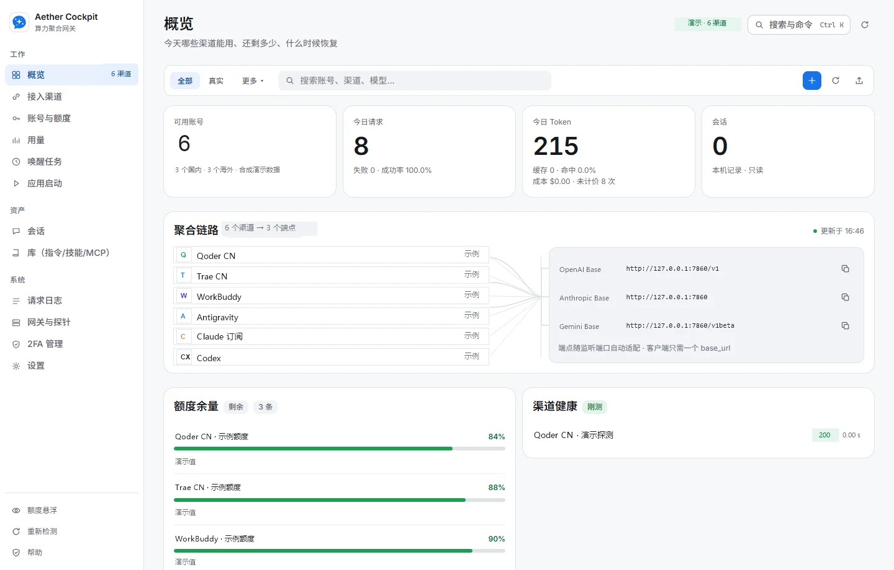
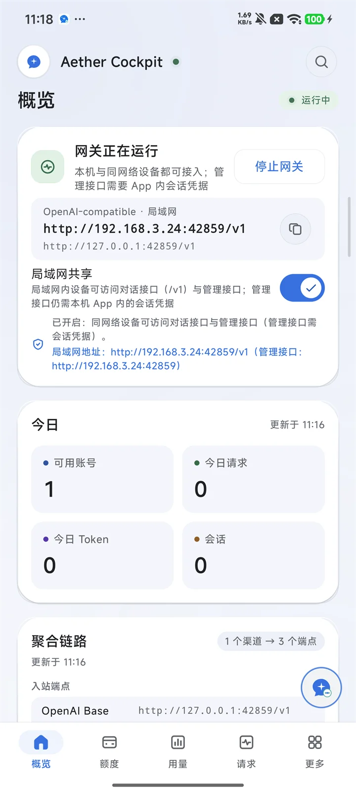
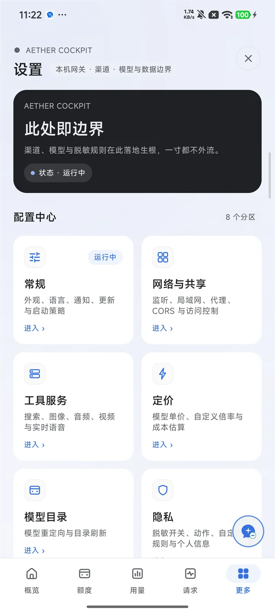
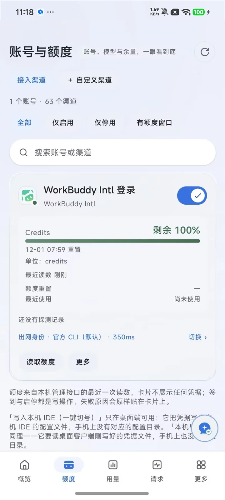
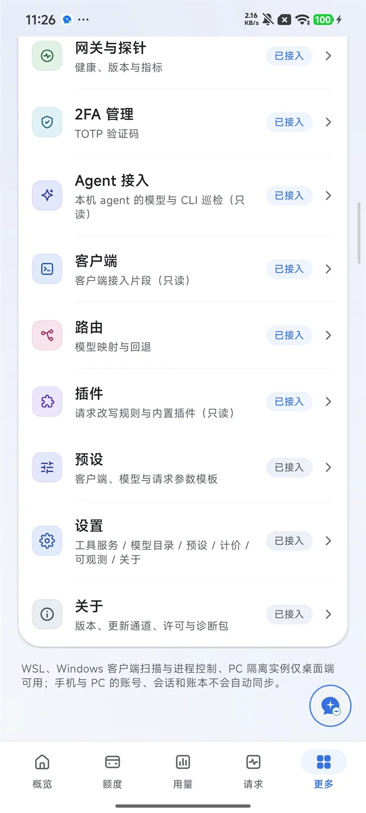

客户端各用所长
Claude Code、Codex CLI、Gemini CLI、OpenCode 共用本机网关；按客户端能力自动选 Chat、Responses、Messages 或 Gemini 协议。
4 协议流式工具调用
Local-first gateway
Aether Cockpit 在本机跑一层聚合网关：一个客户端配置指向多个渠道， 账号按策略轮转，额度、用量与请求日志集中在同一页。凭证与记录不出你的电脑。


概览
设置
额度
更多http://127.0.0.1:7860
http://127.0.0.1:7860/v1
http://127.0.0.1:7860/v1beta
能力矩阵
和直接开各家客户端相比，Aether Cockpit 不改你的工作方式： 客户端还是那个客户端，只是它们背后的出口变成了你自己的一池渠道。
Claude Code、Codex CLI、Gemini CLI、OpenCode 共用本机网关；按客户端能力自动选 Chat、Responses、Messages 或 Gemini 协议。
同一渠道的多个账号放进池子，用标签批量管理，配合自动刷新与健康探测，把请求交给当下更合适的那个。
请求数、Token、缓存命中与成本按时间和渠道聚合；额度和探测结果贴着渠道展示，不用再翻好几个控制台。
默认只绑回环地址；凭证写入本机数据目录并由加密层保护；日志默认只记元数据，可配脱敏规则后导出。
粘性会话保证同一条对话落到同一个账号；优先级、轮转、额度感知与意图路由按需组合，失败时换一个再试。
客户端连接配置一键写入或恢复；提示词、Skills、MCP 服务、子代理与独立客户端实例，在同一处维护。
工作台
下面四张截图取自隔离的演示配置，账号、额度与版本号都是合成数据。 切换标签页看每一页实际是什么样子。
调度策略
点一下左边的策略，看请求落在哪个账号上。实际使用时这些策略可以叠加， 也可以用虚拟模型组把一组上游包装成一个模型名。
sticky → 账号 A · 已绑定会话
渠道覆盖
下面只是代表性示例。登录方式、额度与模型能力因渠道和账号权限而异， 完整清单以应用当前版本里显示的为准。
列出的是可接入的类型，不代表账号已登录，也不保证每个渠道都支持相同的模型与功能。
安全与数据
这一页值得认真读完：你交给它的东西，只应该待在你自己的机器上。
账号凭证、Cookie、OAuth 令牌与代理口令写入本机数据目录（accounts.json、state.db 与平台密钥库），由项目自己的加密层保护。
除了你自己配置的上游渠道，不回传账号、提示词或用量。更新检查只请求发布页的公开接口，并且可以关掉。
默认只绑定 127.0.0.1。开启局域网共享后网关才对外网段开放，管理接口仍然要求应用内会话凭据。
请求日志默认只记元数据（时间、模型、状态、耗时、Token），内置脱敏引擎可按前缀或正则替换凭证与个人信息。
开始使用
直接从这里下载，走官网线路。桌面版解压后直接运行，手机版是正式签名的 APK。
Windows 10/11 · 桌面版
AetherCockpit-0.4.1-windows-amd64.zip28.4 MB需要 Microsoft Edge WebView2 Runtime；解压后运行 AetherCockpit.exe
arm64-v8a · Android 8.0+（API 26）
AetherCockpit-0.4.1-android-arm64-v8a.apk24.1 MB侧载安装需允许「未知来源」；仅支持 arm64-v8a 设备
当前版本 0.4.1 校验值 SHA256 查看更新日志
三步跑通
默认端口 7860。模型名用「渠道 ID/模型名」的形式， 真实可用名称以界面或 /v1/models 返回结果为准。
运行应用，浏览器打开 127.0.0.1:7860 进入工作台；端口被占用可在设置页改。
添加一个你有权使用的订阅账号或 API 服务，然后在「网关与探针」跑一次探测。
复制对应客户端的接入配置，把 base_url 指到本机网关，模型名填渠道 ID/模型名。
# 1) 列出当前可路由的模型 curl.exe http://127.0.0.1:7860/v1/models ` -H "Authorization: Bearer YOUR_GATEWAY_KEY" # 2) 发一条对话请求 curl.exe http://127.0.0.1:7860/v1/chat/completions ` -H "Authorization: Bearer YOUR_GATEWAY_KEY" ` -H "Content-Type: application/json" ` -d '{"model":"<provider-id>/<model-id>","messages":[{"role":"user","content":"你好"}]}'
常见问题
在设置页把监听端口改成其它值后重启网关，或用启动参数指定。判断占用者可以用 netstat -ano | findstr :7860（Windows）。改端口后，客户端的接入地址也要一起改。
按顺序查三件事：两台设备是否在同一网段（跨 VLAN、访客网络、客户端隔离都会挡）；主机防火墙是否放行该端口；管理接口需要应用内会话凭据，另一台设备能连的是网关 API 端点，并且要带上你配置的网关密钥。
用「渠道 ID/模型名」的形式，例如 openai-compat/gpt-4.1。具体可用名称以界面显示或 /v1/models 的返回为准，不同账号权限能看到的模型并不一样。
不是。更新检查请求的是发布页的公开接口，在部分网络环境下会返回 5xx 或超时；界面会显示检查失败，其余功能不受影响。可以稍后重试，或直接在上面「下载」区拿到安装包。
侧载 APK 需要先在系统里允许该来源（设置 → 应用 → 特殊权限 → 安装未知应用）。同时确认设备是 arm64-v8a 且系统不低于 Android 8.0；x86 模拟器与 32 位设备不在支持范围内。
WSL 发行版探测、Windows 客户端进程接管、本机客户端扫描、PC 隔离实例这几项依赖 Windows 本机环境，Android 上无法等价实现，因此界面上直接标注并说明原因，而不是放一个点了没反应的入口。